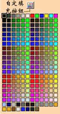
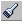

第三节 绘图工具栏介绍
作 者 : Kooler
今天要详细讲解绘图工具栏的功能及定义。
上节已经介绍了工具包含选择区和定义区，下面开始对它的各选项逐一讲解：
1、
点选工具
和一般绘图软件的点选工具一样，FLASH4中的点选工具可以对动画中的元素进行单击选中，单击拖曳，双击，改变尺寸等操作。点选工具被选取时，其定义区内就有相关的定义选项出现：
自动捕捉（SNAP）
点取该按钮使其处于凹下的状态将打开自动捕捉（按钮处于凸出的状态为关闭），这时你按住你选取的对象进行拖拽，在鼠标箭头边上会出现一个黑色的小圈，这个小圈为图象的中心点，这样在你移动对象时对象会自动和最近的网格点或对象的中心重合，这样能够准确的排列各对象。通过在菜单中选取“VIEW”->“SNAP”，也能实现同样的功能。一般情况下SNAP这个选项是打开的。
平滑（SMOOTH）
当你用点选工具选取图形后，这个按钮会自动激活。点击该按钮，可以自动使你的图形或线条平滑，如果按一次产生的变化的你还不满意，你可以多按几次，直到你满意为止。（注意：如果图形被转换成SYMBOL后，这个按钮会自动关闭，不再起作用）
修直（STRAIGHTEN）
使用方法和上面的“平滑工具”一样，不过它的功能是使你选取的图形或线条自动修直，如果你多按几次，弯的也变成直的了。呵呵。。。
旋转（ROTATE）
点取该按钮可以对所有对象（不包括声音哦）进行旋转及变形。当你选中该按钮时，你所选的图形周围会出现6个小圈，当你按住4个角上的小圈时，可对你所选取的对象进行旋转操作；当你选取中间4个小圈时，则可对你所选取的对象进行变形操作。
比例（SCALE）
点取该按钮可以对所有图形及MOVIE CLIP对象进行比例缩放。
2、 文字工具（TEXT）
文字工具（TEXT）
文字工具是创建及编辑文字对象的工具。
创建文字只要单击产生的文本框再输入就可以了。（注意：右上角有一个小圆圈，表示输入文本时的宽度不限。如果右上角有一个小方框，则表明此文本框的宽度已定，输入的文字超过文本框宽度时自动换行。）
要编辑已有的文字对象时，先用点选工具选取对象，再按文字工具就可以进行编辑咯。
文字工具被选取时，在定义区的选项有：
字体
设定文本字体或修改文本框内被选取的反白文字的字体。
另外“字号”、“字体颜色”、“加粗”、“斜体”、“排列方式”就不用多讲了吧，和WORD的设定差不多。呵呵。。。不要告诉我你不会用WORD哦。：）
段落
用于设定文本的段落格式。选中此按钮，将会弹出一个对话框，设定段落格式。MARGIN设定文本框的边距，INDENTATION设定缩进量，单位为PX，LINE
SPACE设定行距，单位为PT。
文本域（TEXT FIELD）
此选项是FLASH4中新增的强大功能，这类文字域可以设定各类属性，设置上很简单，但是要是能够和脚本合使用，就能产生各种复杂的效果。
我们先看看文本域有哪些设置选项吧。 首先，在选择区选择文字工具，再在定义区选取文本域后在场景中拉一个框，然后按右键选取“PROPERTIES”，这时候就弹出一个对话框，其中的选项解释如下：
ariable
文本域的变量名，也就是你给它取的名字，在其他函数中可以调用。
选项（OPTIONS）：
Draw border and background
显示文本区的边界和背景。
Password
在文本区输入的所有文字均以"*"显示，与密码一样不能被复制。
Multiline
允许文本以换行方式出现。
Word wrap
使文本到达边界时能自动换行，必须在Multiline被选取后才能用。
Restrict text length __ characters
限制文本输入的字符最大数。
Disable editing
使文本域的文字不能被编辑。
Disable selection
使文本域里的文字不能被选择，必须在Disable editing打开后才能用。
Outlines
可以选择是否保存字体的轮廓，或保存你所指定的字母、符号、数字等。 它包括三个子选项：保存全部字体的轮廓、所有字体的轮廓均不保存和保存指定字体的轮廓。合适的选用可相对减少电影的尺寸。
另外对于文本域和脚本的结合使用，后续的实例讲解中会介绍。
3、
绳套工具（LASSO TOOL）
使用方法和功能和PHOTOSHOP中的绳套工具一样，能够在当前帧上选取不规则区域，在其相 应的定义区内的附属选项有：
魔术棒（MAGIC WAND）
使用魔术棒可以选择位图中颜色相似的区域。
魔术棒属性（MAGIC WAND PROPERTY）
这个选项为魔术棒的相近颜色识别度，默认值为32，单位是像素。
多边形选择方式（POLYGON MODE）
使用和PHOTOSHOP中的一样，这种方式下，你在选择时的各点以直线连接。
4、颜色填充（COLOR）
“颜色填充”不属于选择区工具栏，但是在各绘图的定义区内都有要求颜色填充的设置，所以我就把它单独列出来进行讲解。
在FLASH中，颜色填充我将它分为“均匀填充”和“渐变填充”。均匀填充就是在你所选区域填充的颜色是一样的；渐变填充所填充的颜色可以不同，也有深浅变化。我们看一下具体操作吧，请看下图：

如果上面的填充还不能满足你的要求，你可以自定填充，点击上图的“自定填充”按钮，弹出下面的对话框： （此对话框也分均匀填充和渐变填充。）
上图显示的是均匀填充的各种设定选项，在这里有几种定义颜色的方法：
（1）直接在调色板上选取。
（2）直接输入RGB值即可。
（3）选择HEX选项，然后在RGB内输入你所需颜色的16进制值。比如，当你想让你的电影背景和你的网页背景颜色一样时就可以用这种方法。
（4）导入颜色。点取导入和存取颜色按钮，可以导入其他图片和文件的颜色，也可以将你的颜色存成文件哦。另外，你也可以调节填充色的ALPHA的值，使你的填充透明。
再看下图，是在上图点击GRADIENT后的对话框，此部分为渐变填充的设定：
这里的渐变功能主要是通过渐变调节杆实现的，如图，渐变调节杆有三个色块，依次为绿色、白色、蓝色。在FLASH渐变效果有两种：RADAIL和LINER，上图选择的是RADAIL，产生的效果如预览窗显示。其他操作均和均匀填充相同。
在FLASH中填充变化及组合的运用，可以做出很多特效，以后实例中会有涉及（呵呵，关注哦）。
5、绘图工具
在选择区中有以下几个工具是绘图工具，所以我将它们归成一类：
（1）
线条工具
顾名思义，是画线条用的，在定义区有三个选项：颜色、宽度和样式。
（2）
圆圈工具和方框工具
呵呵，这两个也不用多说了。圆圈工具是画圈的，方框工具是画框的。：）
（3）
铅笔工具（pencil tool）用来在动画中绘制线条和勾勒轮廓，应用十分广泛。其定义区的选项有：直线式，平滑式和墨线式三种。
在FLASH3中，以上绘图工具都包含在铅笔工具内，可能是为了选取方便才在FLASH4中单独把（1）和（2）列出来吧。
6、
墨水瓶（INK BOTTLE）
墨水瓶工具能够在选定的图形的外轮廓上加上选定的线条，或是改变一条线条的-颜色，宽度和样式等等。
7、
笔刷工具（BRUSH）
其定义区内有5个选项：笔刷模式、笔刷填色、笔刷大小、笔刷线型及锁定填充。 笔刷模式共有5个模式，分别为：PAINT NORMAL、PANINT
FILL、PAINT BEHIND、PAINT SELECTION和PAINT INSIDE。下图是各种模式下的效果：
其中在使用PAINT BEHIND模式时要注意，笔刷的起始处应该在你所要填充的区域内。
8、
油漆桶（PAINT BUCKET）
油漆桶工具能够填充未填色的轮廓线或是改变现有图形的颜色。其定义区内的选项有：
填充、缺口大小（GAP SIZE）、填充变形（TRANSFORM FILL）及锁住填充（LOCK FILL）。 缺口大小有4个选项：不封闭缺口，封闭小缺口，封闭中缺口，封闭大缺口。FLASH4能自动辨认未合拢的轮廓线，并将其认为是合拢的而加以填充。
如果你对现在的渐变填充不满意，就可以通过填充变形来改变，先选择要改变的对象，将会在填充区的渐变色或位图上周围显示几个小圆圈和小方块，拖动小圆圈可以任意旋转缩放，拖动小方块可以缩放填充比例。
9、
橡皮擦（ERASER TOOL）
其定义区内的选项有： 擦除模式、水龙头及象皮擦尺寸。
擦除模式选项有：正常擦除，擦除填充色，擦除线条，擦除选区的填充色，内部擦除。 呵呵，与油漆桶是对着干的。
水龙头的作用是可以直接擦除点中的整条线段或填充色块。
10、
滴管（DROPPER TOOL）
滴管能够将热点（滴管头）点中的线条或填充色块的特征（颜色，线形等）选择出来供其他绘图工具使用。在用滴管点击之后，如果点取的是线条，则自动跳到墨水瓶工具，如果点取的是填充区域，则自动跳到油漆桶工具，墨水瓶和油漆桶工具下的选项值就是刚才滴管所单击区域的选项值。
11、
另外这最后两个工具是查看用的，别告诉我你不会用哦。。呵呵
好了，工具栏讲完了，下节讲菜单。